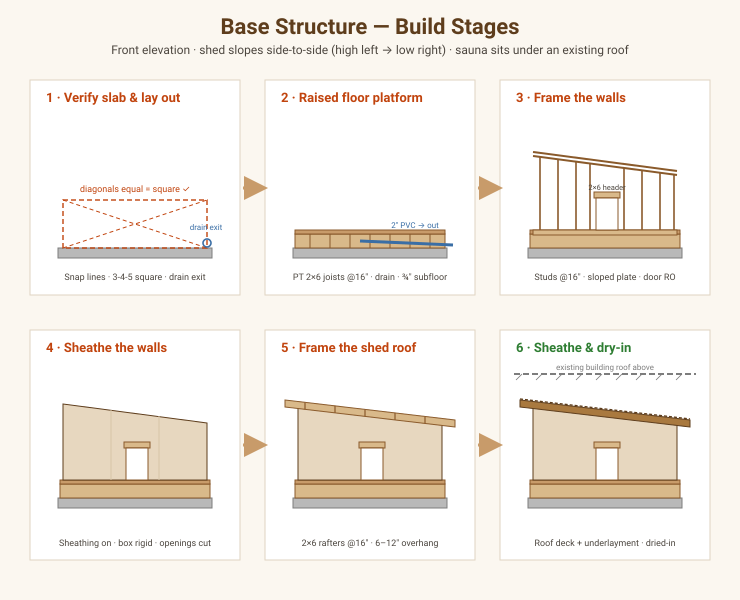
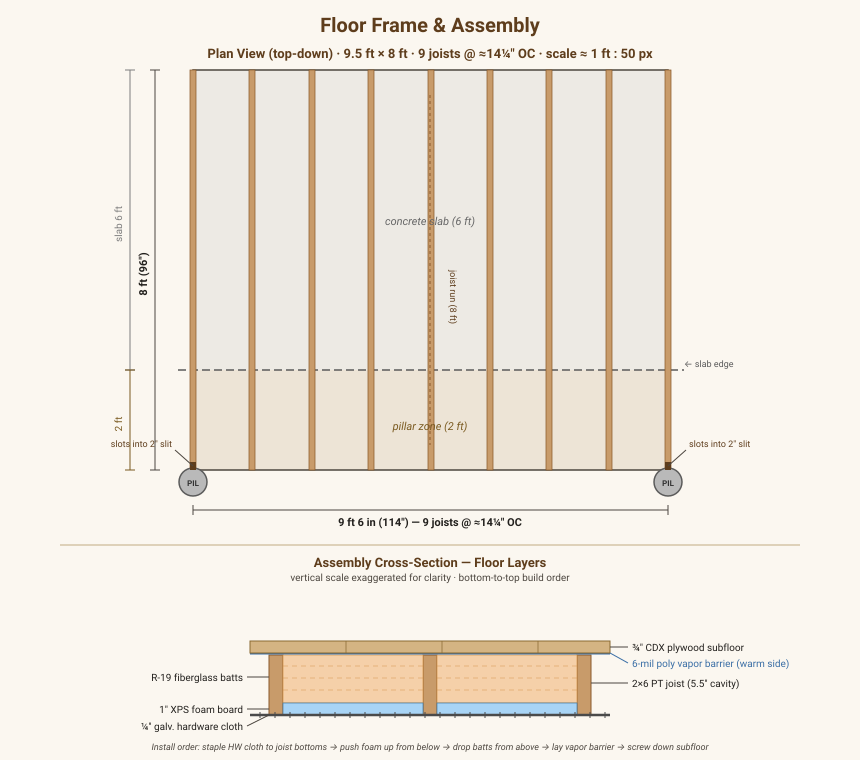

Overview
Step-by-step build of the structural shell: the raised floor platform, the framed and sheathed walls, and the shed-roof frame with sheathing — up to the point where a weather-tight box is standing, square, plumb, and dried-in. This is the skeleton only. It stops before insulation, vapor barrier, interior cladding, benches, and finish roofing/siding.
This covers Build Phase 1 (Foundation) and Build Phase 2 (Framing & envelope, through sheathing) from the Build Guide, and maps to stages 2–4 of the construction-sequence storyboard.
In scope: floor platform → wall framing → wall sheathing → roof framing → roof sheathing → dry-in. Out of scope (later phases): rough electrical, insulation & foil barrier, battens/cladding, finish roofing & siding, door slab, benches.
Design sources: Foundation & Base, Framing, Dimensions & Layout. The full material takeoff lives in Materials & Tools — this guide tells you the order of operations, not the shopping list.
Stage-by-stage drawings

Each panel is one step of this guide (front elevation, facing the door). The shed roof slopes side-to-side (high left → low right — flip to suit your site), and the top of every panel is the existing building’s roof the sauna tucks under. Drawings are schematic, not shop-precise — confirm dimensions against the slab.
| Panel | Step | What it shows |
|---|---|---|
| 1 | Step 1 | Slab + snapped lines, 3-4-5 square, drain exit |
| 2 | Step 2 | PT 2×6 joists, drain in cavity, subfloor |
| 3 | Step 3 | Studs @ 16″, sloped top plate, door RO + header |
| 4 | Step 4 | Plywood sheathing, box rigid, openings cut |
| 5 | Step 5 | 2×6 rafters across the width + overhang |
| 6 | Step 6 | Roof deck + underlayment, dried-in under the existing roof |
Before you start
Prerequisites
- Permits in hand and the slab confirmed suitable (see Permits & Code).
- Existing slab measured, reasonably level, and sound. The raised platform can absorb minor slab slope with shims, but note any low corner before you start.
- Drain path decided — you’ll rough in the 2″ PVC inside the floor cavity during Step 2, so know where it daylights to the French drain before you close the platform (see Foundation & Base).
Fasteners & materials — read this first
Warning — corrosion: A sauna is a high-humidity building. Use hot-dip galvanized or stainless framing fasteners, joist hangers, and anchors throughout. Any wood in contact with the slab must be pressure-treated (PT), and PT requires HDG/SS fasteners (standard zinc corrodes against PT chemicals).
Key dimensions (recap)
| Element | Spec |
|---|---|
| Footprint (exterior) | ~9.5 ft front/back walls × 8 ft side walls |
| Floor joists | PT 2×6 @ ≈14¼″ OC, running 8 ft (slab to pillar) — 9 joists total |
| Floor assembly | HW cloth → XPS foam board → R-19 batts → 6-mil vapor barrier → ¾″ CDX subfloor |
| Framing | 2×6 studs @ 16″ OC, single bottom plate + double top plate |
| Wall height | High side wall 9.5 ft → low side wall 8 ft |
| Roof | Shed / mono-pitch, sloping side-to-side (across the 9.5 ft width) |
| Door RO | ~28″ × 72–80″, front wall, double 2×6 header |
Orientation — how the roof sits
The roof is a single slope running side-to-side as you face the front door — high on one side wall, low on the other, shedding to that low side:
- The two side walls (8 ft long) are the eave walls — one framed tall (top plate at ~9.5 ft), one short (top plate at ~8 ft).
- The front and back walls (9.5 ft long) are the rake walls — their top plates slope to follow the roofline.
- Rafters run across the ~9.5 ft width, bearing on the tall and short side walls.
Pick the downhill side deliberately: slope toward the side that carries any incidental runoff away from the door approach. Confirm on site before you cut the sloped plates.
Note — the sauna sits under an existing building’s roof. Because an overhead structure covers the sauna, its own roof carries essentially no snow or direct rain load — only its self-weight. So 2×6 rafters @ 16″ OC over the ~9.5 ft span are adequate and the shallow side-to-side slope is just to shed any incidental moisture (blow-in, condensation, a drip from above). No snow-load rafter upsizing is needed here. If the covering structure is ever removed, re-check rafter sizing against snow load before relying on this roof as a weather roof.
Tools
Circular saw, drill/impact driver, framing nailer or hammer, 4-ft level and a longer straightedge, chalk line, speed square + framing square, tape, string line, hammer drill (for slab anchors), and a rotary laser or water level to establish platform level across the slab.
Step 1 — Verify the slab & lay out the platform
- Sweep and inspect the slab. Note cracks, the high corner, and the fall (if any). The platform’s top must end up level even if the slab isn’t.
- Establish square. Snap the outer rectangle of the platform on the slab (~9.5 ft × 8 ft — confirm exact numbers against your slab). Square it with the 3-4-5 method and confirm the two diagonals are equal — that’s your proof of square. Adjust until they match within ⅛″.
- Mark the outline of the platform rim and the drain outlet location with chalk. Mark where the 2″ PVC will exit toward the French drain.
- Dry-lay the rim to sanity-check the footprint against the door/heater side before any fastening.
Checkpoint: Diagonals equal, footprint fits the slab with your intended overhang/setback, and the drain exit points the right way. Don’t cut joists until this passes.
Step 2 — Build the raised floor platform

The platform is a PT 2×6 joist deck that lifts the sauna off the slab, bridges the slab-to-pillar transition, and leaves a ~5.5″ cavity for the drain line. The two outer joists slot into slits in the cement pillars — no beams or post caps required. The floor assembly adds insulation and a vapor barrier before the subfloor goes down.
2a — Seat the joists
The cement pillars have 2″ slits cast into their tops. The two outer 2×6 joists slot directly into these slits — no post caps, no beams, no anchors required.
- Lay the capillary break. Roll sill gasket under all joist ends where they will rest on the slab, so PT wood never sits directly on wet concrete.
- Slide the two outer joists into the pillar slits. A 2×6 is 1.5″ thick; the 2″
slit leaves a small amount of play — use a shim of PT wood or treated shingle to
snug the fit if needed. These two outer joists are your reference for level and
span; set them first.
- Level the outer joists. Because the slab has a slight slope, shim the slab end of each joist until both are dead-level and coplanar with each other. Everything else follows this plane.
- Lay out the remaining 7 interior joists evenly across the 9.5 ft width at ≈14¼″ OC (8 equal spaces in 114″). Their slab ends rest on the concrete with sill gasket; their far ends rest against or are toenailed to a 2×6 PT rim joist spanning between the two outer joists at the pillar end.
Warning — corrosion: All fasteners and joist hangers must be hot-dip galvanized (HDG) or stainless steel. PT lumber accelerates corrosion of standard zinc hardware.
2b — Complete the frame
- Add mid-span blocking between each joist pair at the midpoint of the 8 ft span. This stiffens the deck and prevents twist.
- Rough in the drain now — while the bays are open:
- Set the floor-drain fitting at the planned low point.
- Run 2″ Schedule-40 PVC (DWV), solvent-welded, sloped ≥ ¼″ per foot toward the outlet, routed in a joist bay. Keep it sloped the whole way.
- Confirm it daylights past the footprint toward the French drain.
Warning: You cannot easily fix drain slope after the subfloor goes down. Check the fall with a level before closing the deck.
2c — Floor assembly (insulation + protection)
Install in this order — from below, working upward:
- Staple ¼″ galvanized hardware cloth across the entire underside of the joists, spanning all bays continuously. Use a contractor-grade staple gun with ½″ HDG staples every 6″ along each joist face, or 1″ screws with fender washers at 12″. The mesh does two jobs: keeps rodents out and holds the foam board up — no ledger strips needed.
- Push 1″ XPS foam board panels up into each joist bay from below so they rest on the hardware cloth. Cut panels to fit snugly. The foam provides a weather and moisture break from below; no separate vapor barrier is needed on this side.
- Drop R-19 fiberglass batts into the joist bays from above, on top of the foam. Standard 15″-wide R-19 batts fit 16″ OC bays without cutting.
- Lay 6-mil poly vapor barrier across the top of the joists (the warm/interior side), lapping the edges up the rim joists and stapling every 12″. Tape all seams with housewrap tape. This stops sauna steam from migrating down into the insulation.
Note — vapor barrier placement: The barrier goes on the warm (top) side only. No barrier is needed between the foam and the batts — that would trap moisture in the insulation. XPS foam on the bottom + poly on the top is the correct sandwich.
- Check level. Confirm the top of the joists is level across the whole deck with a laser or water level before laying the subfloor.
- Lay the ¾″ CDX exterior plywood subfloor. Glue (PL Premium) and screw to the joists, stagger the seams, and leave a ⅛″ expansion gap at panel edges. Keep the drain fitting accessible/flush — do not bury it under a solid panel.
2d — Floor materials
| Item | Qty | Spec | Notes |
|---|---|---|---|
| 2×6 PT joist | 9 | 8 ft | Runs slab-to-pillar; 2 outer joists slot into pillar slits |
| 2×6 PT rim joist | 1 | 10 ft | Cut to 9.5 ft; spans between outer joists at pillar end |
| PT shims / treated shingles | 1 bundle | — | Snug joist fit in 2″ pillar slits; shim slab-end level |
| Sill gasket | 1 roll | 25 ft | Capillary break under joist ends on slab |
| ¼″ galv. hardware cloth | 1 roll | 24″ × 50 ft | Covers 9.5 × 8 ft floor; stapled to joist bottoms |
| 1″ XPS foam board | 3 sheets | 4×8 ft | Cuts to fit bays; 76 sq ft needed |
| R-19 fiberglass batts | 2 pkgs | 15″ wide, 2×6 depth | Fits ≈14¼″ OC bays; trim as needed |
| 6-mil poly vapor barrier | 1 roll | 10 × 25 ft | Warm-side only (top of joists) |
| ¾″ CDX exterior plywood | 3 sheets | 4×8 ft | 76 sq ft floor; stagger seams |
| Construction adhesive | 3 tubes | PL Premium | Subfloor glue |
| HDG staples, ½″ | 1 box | Contractor-grade | Hardware cloth to joists |
| Fender washers + 1″ screws | 24 sets | ¼″ washer | Backup fastening for hardware cloth |
| Subfloor screws | 1 box | 1-5/8″, exterior | ~100 ct |
| Framing nails, 16d HDG | 1 lb | 3.5″ | Blocking and rim joist |
| Housewrap tape | 1 roll | Tyvek or foil | Vapor barrier seams |
Checkpoint: Platform is square, dead-level, solidly anchored on both beams; drain is sloped and daylighting; hardware cloth, foam, batts, and vapor barrier in place; subfloor fastened. This deck is your work surface for building walls.
Step 3 — Frame the walls
Build each wall flat on the new deck, then tilt it up (the handbook’s method). Frame in this order so the tall/short geometry stays consistent: build the two side (eave) walls first — one tall, one short — then the two front/back (rake) walls to fit between them.
3a. Cut plates and lay out studs
- Cut a single bottom plate and two top plates for each wall.
- Side (eave) walls: the top plate is flat/level — the tall wall’s plate sits at ~9.5 ft, the short wall’s at ~8 ft.
- Front/back (rake) walls: the top plate is sloped to connect the tall side to the short side (mark the rake by stringing a line from the tall corner to the short corner).
- Lay out studs @ 16″ OC. Gang the bottom and top plates together and mark both at once so studs line up. Mark corner posts (3-stud or 2-stud-plus-blocking) and any partition backing at each end.
3b. Frame the openings
- Door (front wall): build the rough opening at ~28″ wide × 72–80″ tall.
Full-height king studs flank the opening; jack (trimmer) studs carry the
header; cripple studs fill above the header @ 16″ OC.
Note — header: use a double 2×6 header over the door (opening ≤ 3 ft). The door is an outswing, glazed unit; frame the opening plumb and square — a racked opening will bind a glass door.
- Vents: frame two small rough openings — a low intake and an upper exhaust (positions per Ventilation). Box each with a sill and header of 2×6 blocking.
- Heater cable penetration: add a stud bay or blocking where the heater feed will pass through, so the later sealed penetration lands in framing, not open cavity.
3c. Assemble, raise, plumb, and brace
- Nail each wall together flat: plate-to-stud with two framing nails per end, corner posts and openings as laid out.
- (Optional but efficient) sheathe while flat — see Step 4; it’s far easier to nail plywood and square the wall on the deck than standing. If you sheathe now, square the wall to its diagonals first.
- Raise the wall, align its bottom plate to the deck edge, and tack it down. Raise the tall side wall, then the short side wall, then the two rake walls between them.
- Plumb and brace. Plumb each wall with the level, then nail temporary diagonal braces from top plate to the deck. Don’t remove braces until sheathing (or the roof) locks the box.
- Tie the corners together (nail the overlapping corner studs) and add the second (upper) top plate, lapping the corners so the double plate ties all four walls into one ring. Overlap plate joints at least 24″ from lower-plate joints.
Checkpoint: All four walls up, plumb in both directions, corners tied, double top plate lapped and nailed, openings square. Measure diagonals of the whole box — equal means the plan is square. The structure now “stands.”
Step 4 — Sheathe the walls
If you didn’t pre-sheathe flat in Step 3, sheathe now — sheathing is what makes the box rigid (shear), so it replaces the temporary braces.
- Panels: ½″ (or per BOM) exterior wall sheathing, run vertically or horizontally with staggered seams. Keep panels flush to the bottom plate and run them up over the rim/floor band to tie wall to platform where possible.
- Nailing schedule: typically 6″ OC at panel edges, 12″ OC in the field (use your local code / panel stamp). Nail into every stud the panel crosses.
- Cut out the openings (door, vents, cable) with a saw once panels are on.
- Remove temporary braces only after enough sheathing is on to hold the box square.
Note — sheathing choice is still open. OSB is cheapest but not vapor-permeable (the handbook flags this for wall drying); a permeable option (Zip/plywood + wrap) is priced in Cost Options. Confirm the panel before buying. House wrap / weather-resistive barrier goes on in the envelope phase — not required to call the shell “standing,” but install it before finish siding.
Checkpoint: Walls fully sheathed and nailed to schedule; box is rigid without temporary braces; openings cut clean.
Step 5 — Frame the shed roof
The roof is a single slope from the tall side wall down to the short side wall, with rafters spanning the ~9.5 ft between them. Because the sauna is under an existing roof (see orientation note above), 2×6 rafters @ 16″ OC are adequate — they carry only self-weight, not snow.
- Set the bearing. The tall side wall’s double top plate is the high bearing; the short side wall’s is the low bearing. Both are already at their finished heights from Step 3.
- Lay out rafters @ 16″ OC on both eave-wall top plates (mark both so rafters stay parallel and in plane).
- Cut a pattern rafter:
- Birdsmouth seat cuts where the rafter crosses each eave-wall plate.
- Plumb cuts at the high and low ends.
- Overhangs (tails): extend past the eave walls ~6–12″ (per Framing) to protect the siding.
- Test-fit the pattern on the walls, adjust, then use it as the template for all rafters.
- Set the rafters, seating each birdsmouth and fastening with HDG/SS hurricane/rafter ties (not just toe-nails) at both bearings.
- Rake overhang: run lookouts / outriggers past the front and back (rake) walls, or a ladder-framed rake, to carry a ~6–12″ overhang on those sides too.
- Block between rafters over both eave walls (solid blocking or bird-blocks) to stiffen the roof, close the bays, and provide a nailer for fascia. Leave/detail vent gaps where the roof assembly needs to breathe (coordinate with the insulation phase).
- Fascia: nail fascia boards to the rafter tails on all four sides to true up the eave and rake lines for later roofing/drip edge.
Checkpoint: All rafters set and tied, overhangs consistent front/back and on the eaves, blocking and fascia in — the roof plane is straight when you sight down it.
Step 6 — Sheathe the roof & dry-in
- Roof sheathing: ½″+ exterior plywood/OSB across the rafters, seams staggered, long edges perpendicular to the rafters, with panel/H-clips at unsupported edges if the span calls for them. Nail to schedule (edges ~6″, field ~12″).
- Drip edge along the eaves first, then underlayment (felt/synthetic) lapped uphill and over the drip edge, then drip edge on the rakes over the underlayment.
- Dry-in. Sheathing + underlayment makes the shell weather-tight against incidental moisture.
Note — reduced exposure under the existing roof. Because the overhead structure takes the weather, the sauna roof isn’t exposed to full sun/snow/rain, so an elaborate finish roof isn’t required. Sheathing + a simple membrane/underlayment to shed any blow-in or drips from above is enough here — a low-slope-rated cap can be added later if desired. (If the sauna were ever standalone, it would need a proper low-slope finish roof, flashing, and drip edge as its weather layer.)
Checkpoint: Roof sheathed, drip edge + underlayment on, box is dried-in.
The shell is standing — what’s next
At this point you have a square, plumb, sheathed, dried-in box: raised floor, framed & sheathed 2×6 walls, and a sheathed shed roof with the drain roughed in below. That matches stage 4 of the construction storyboard. The next phases (separate guides) are, in order:
- Rough electrical — run the heater circuit before insulation (Electrical & Heater).
- Insulation & vapor barrier — mineral wool in the bays + taped foil (Insulation & Vapor Barrier).
- Finish roofing & siding, then interior cladding, ventilation, benches, door, and the heater install.
Inspection & checkpoints (summary)
- [ ] Platform square (equal diagonals) and dead-level across the slab.
- [ ] Drain sloped ≥ ¼″/ft and daylighting before the subfloor closed the cavity.
- [ ] Platform anchored to slab; capillary break under all PT.
- [ ] Walls plumb both ways; corners tied; double top plate lapped.
- [ ] Door RO square with a double 2×6 header; vent + cable openings framed.
- [ ] Sheathing nailed to schedule; box rigid without temporary braces.
- [ ] Rafters set and tied at both bearings (2×6 OK — roof is under existing cover).
- [ ] Roof sheathed; drip edge + underlayment on; shell dried-in.
- [ ] Any framing/rough-in inspection required by permit passed before closing walls.
Open questions / to-do
- [ ] Reconcile the cross-section / build-sequence drawings to the side-to-side
slope + covered-roof setup (they still show front-to-back over 8 ft).
framing.mdtext is updated. - [ ] Lock the sheathing product (OSB vs. permeable) from Cost Options.
- [ ] Verify exact footprint and setbacks against the measured slab before cutting.
- [ ] Confirm final door and vent rough-opening sizes once units are selected.
Sources
- Foundation & Base, Framing, Dimensions & Layout
- Construction Drawings (sequence stages 2–4)
- Sauna Construction Handbook (
969813002-SAUNA-CONSTRUCTION-HANDBOOK.pdf) — raised insulated 2×6 floor with SS mesh, 2×6 for freezing climate, build-walls-flat method; see PDF Digests. 636822184-CONSTRUCTION-DETAILS-ON-PLATFORM-FRAMING.pdf,321995152-2015-Shed-Construction-Drawings.pdf(platform & shed-roof references).